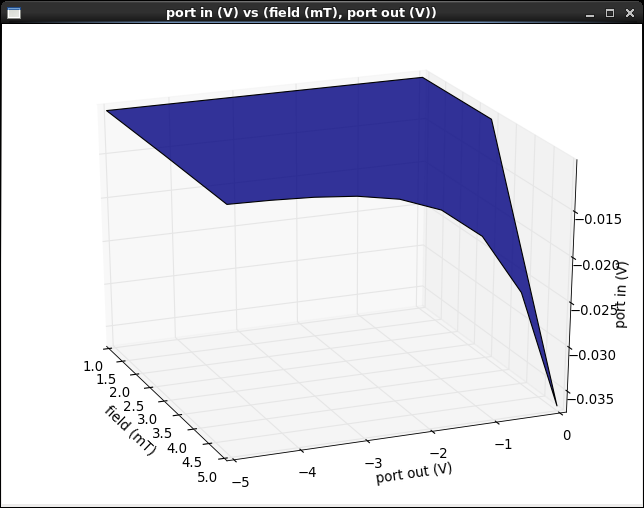
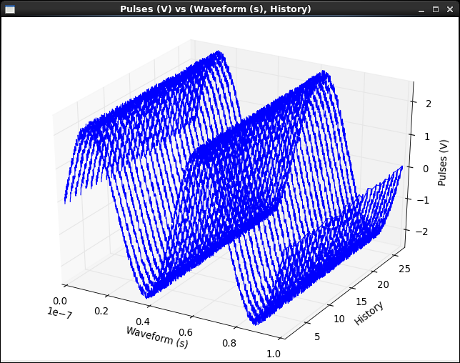

Surface plot¶
The colormapped plot display allows for the display of one dimension in the vertical direction versus two other dimensions in the plane.

Pan & zoom¶
Clicking anywhere on the plot with the left mouse button and dragging in any direction will cause the axes and the surface to rotate in the direction of the drag.
Clicking anywhere on the plot with the right mouse button and dragging up or down will cause the surface to zoom in and out.
Waveform style¶
The surface plot supports an alternate style suited for the display of discrete waveforms rather than of a two-dimensional sweep.
